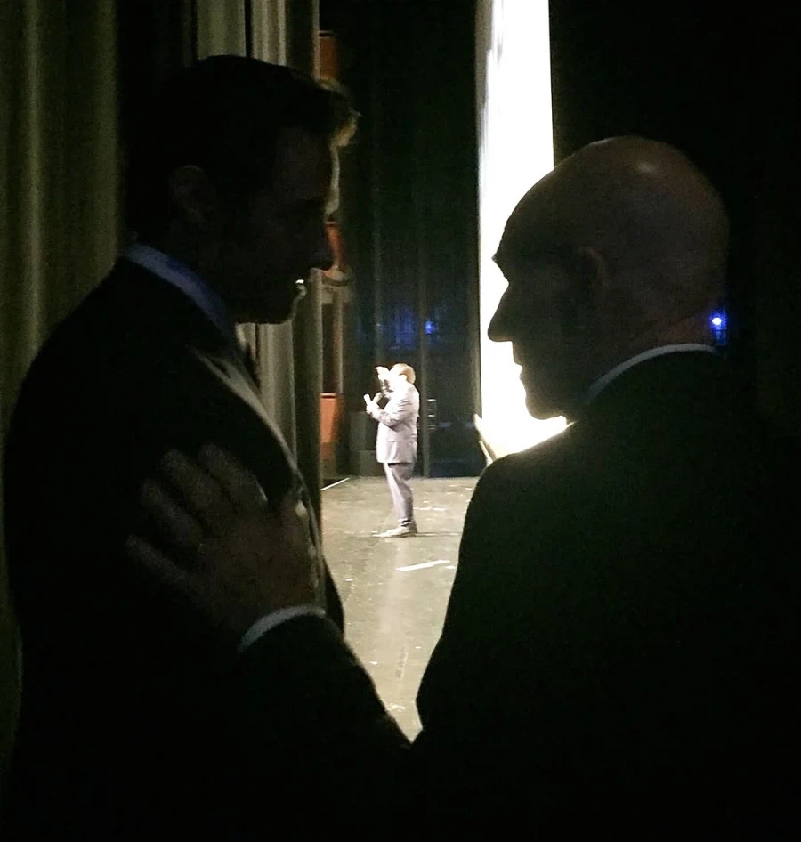
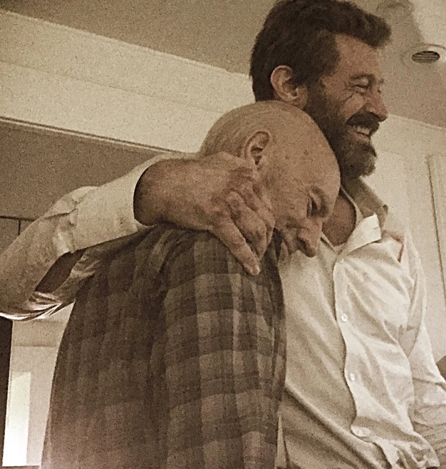
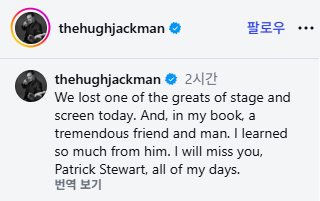
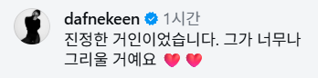
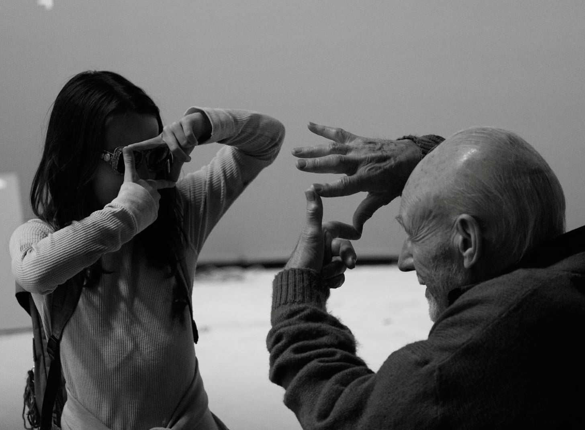
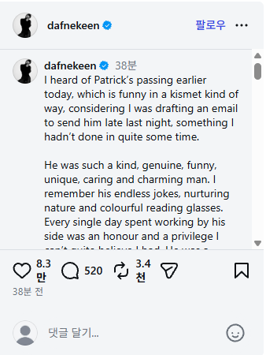

휴 잭맨 인스타
오늘 우리는 연극과 영화계의 위대한 거장 중 한 분을 잃었습니다.
그리고 제게 그는 더없이 훌륭한 친구이자 멋진 분이었습니다.
그에게서 정말 많은 것을 배웠습니다.
패트릭 스튜어트, 저는 평생 당신을 그리워할 것입니다.

그리고 휴잭맨 인스타 글에 댓글을 단 다프네 킨


다프네 킨 인스타
오늘 아침 패트릭의 부고 소식을 들었는데, 어젯밤 늦게 그에게 보낼 이메일을 작성하고 있던 참이라 마치 운명처럼 느껴졌습니다. 정말 오랜만에 그에게 이메일을 보내는 것이었죠.
그는 정말 친절하고 진실하며 유머러스하고 독특하고 배려심 깊고 매력적인 사람이었습니다. 그의 끝없는 농담과 따뜻한 성품, 그리고 알록달록한 안경이 기억납니다. 그의 곁에서 함께 일했던 하루하루는 제게 큰 영광이자 특권이었고, 그런 시간을 가질 수 있었다는 게 믿기지 않을 정도입니다. 그는 연기뿐 아니라 삶의 지혜까지 갖춘 진정한 거장이었습니다. 무대와 스크린을 넘나들며 우리 시대 최고의 배우 중 한 명이었습니다.
저는 항상 그를 존경해 왔고, 앞으로도 그럴 것입니다. 배우로서, 그리고 한 인간으로서 말입니다. 그는 모든 오래된 교훈을 놀라움과 재미, 흥분으로 가득 채워 전달하는 특별한 재주가 있었습니다. 그의 따뜻함과 주변 사람들에게 보여준 존경심을 영원히 기억할 것입니다. 그
와 함께 보냈던 시간들을 마음속 깊이 간직할 것이며, 그가 제 세상을 바라보는 방식에 얼마나 큰 영향을 주었는지 영원히 잊지 않겠습니다.
부디 편히 잠드세요, 위대한 거인이자 전설이여. 당신이 남긴 아름다운 업적, 인간미, 그리고 친절함은 영원히 살아남을 것입니다.
영화 로건에서 프로페서 X를 추모하는 울버린과 X-23의 장면이 생각나서 올림
명복을 빕니다
뉴스만 봐도 슬펐는데 장면 이렇게 모아 놓으니까 미어진다 ㅠ